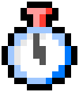
猫といっしょに記録
Timecardタブでワンタップ
あなたの猫が一緒に歩みを進めます
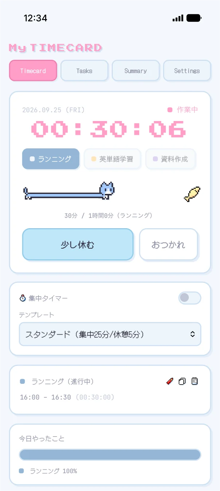
続けるほど猫が喜ぶ！
シンプル打刻ページでタスクを習慣化
どこでも使える・入力かんたん・続けるほど猫が育つ
ブラウザで使えるシンプルなタスク記録アプリ。
集中タイマーやタスク達成時のごほうびアイテムなど、タスクを習慣化するための仕掛けが盛りだくさん。
ウェブ完結で、PC・スマホ・タブレットなど端末を問わず、いつでもどこでも記録できます。

Timecardタブでワンタップ
あなたの猫が一緒に歩みを進めます

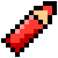
カレンダーで達成率をひと目で確認
目標達成の⭐を集めるといいことが
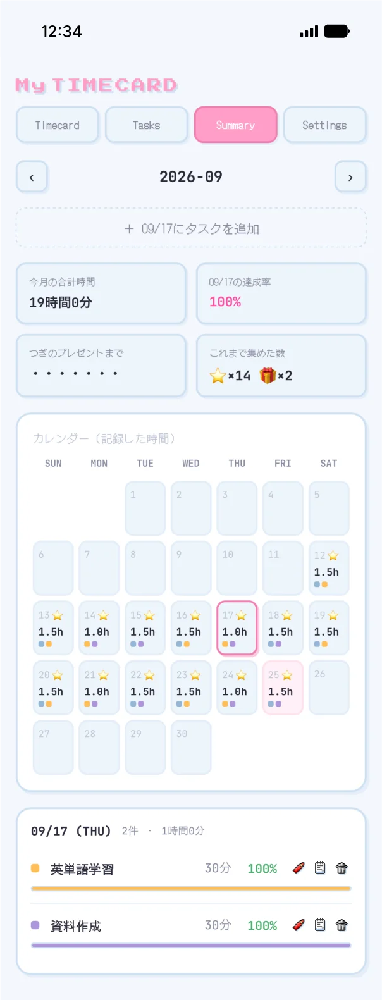
達成を重ねるとプレゼントが届き
猫がパワーアップ？！
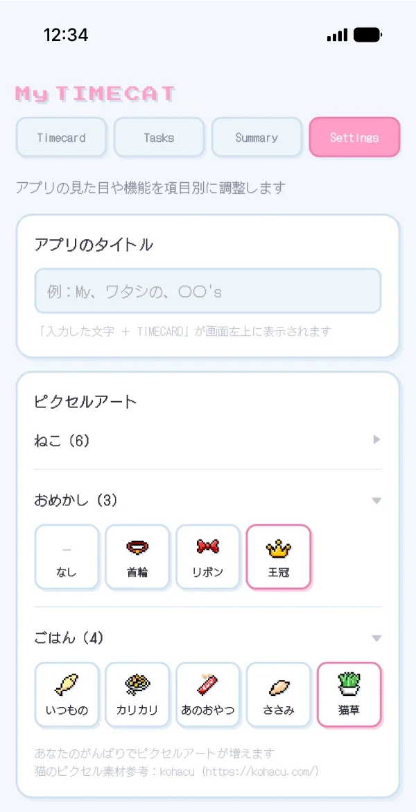
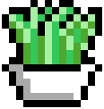
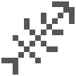
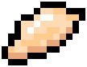
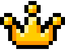
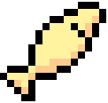
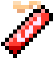
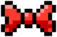
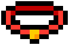
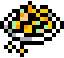
タスクをこなして、猫のためのカスタムアイテムをゲットしよう
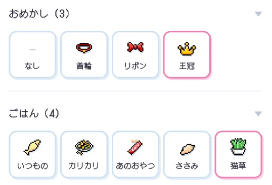
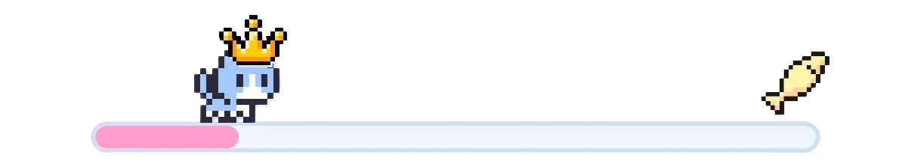
30日連続達成でひみつの猫が登場？！！
4つのタブでシンプル操作
猫と一緒に歩みを進める
自分で決められるメリハリ集中タイマー
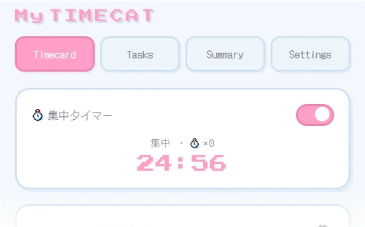
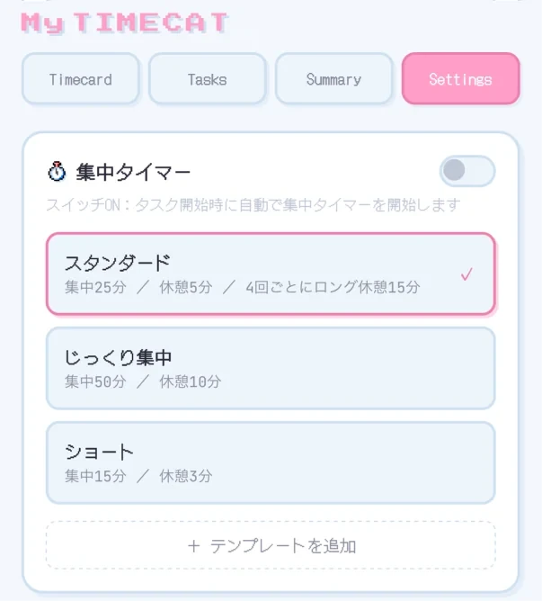
タスクを作る・編集する
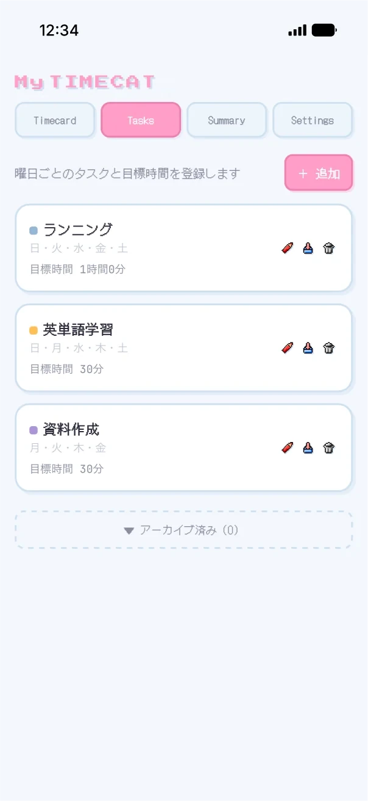
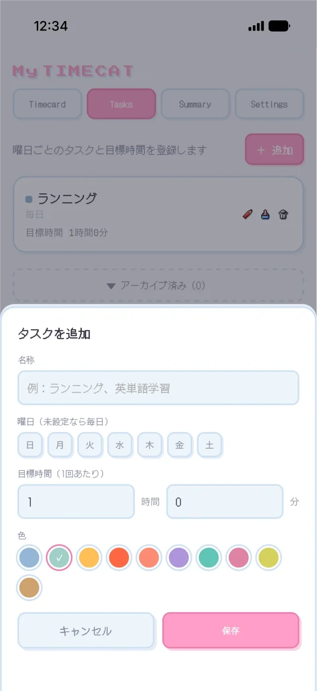
カレンダーで振り返る
カスタマイズする
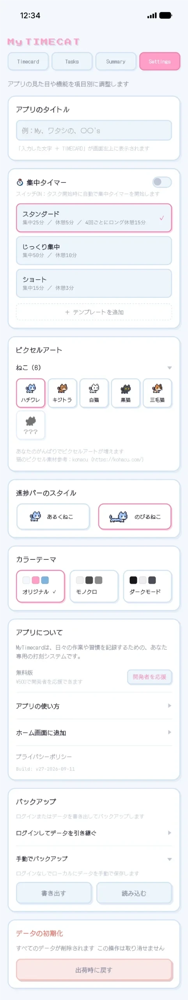
いいえ、ログインしなくてもすぐに使えます。ログインすると、PC・スマホ・タブレットなど複数の端末で同じデータを使えるようになります。ログイン方法はGoogleアカウントとメールアドレスの2つから選べます。
ログインしていないときは、使っている端末のブラウザの中に保存されます。ログインすると、データはアカウントにひもづけてオンライン上に保存され、同じアカウントでログインした端末どうしで自動的に同期されます。
ログインしていれば、新しい端末で同じアカウントにログインするだけでそのまま引き継げます。ログインしていない場合は、機種変更の前にSettingsの「バックアップ」で「書き出す」を押してファイルを保存し、新しい端末で「読み込む」を選んでください。ログインせずに使っているときは、ブラウザのデータを消去するとタスク記録も消えてしまうので、ときどき書き出しておくと安心です。
無料ですべての機能を使えます。気に入っていただけたら、Settingsの「開発者を応援」から¥500の買い切りで応援していただけるとうれしいです（購入にはGoogleログインが必要です）。
timecard.mim-crt.com